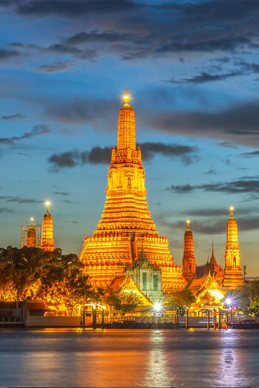
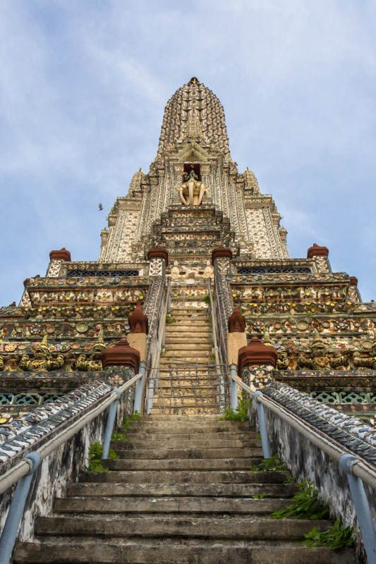

Wat Arun Ratchawararam, commonly known as Wat Arun or the Temple of Dawn, is one of Bangkok's most iconic and photographed landmarks. Located on the Thonburi side of the Chao Phraya River, this magnificent temple is famous for its towering central spire (prang) decorated with colorful porcelain and seashells that sparkle brilliantly in the sunlight.
Built in the early 19th century during the reign of King Rama II, Wat Arun represents the dawn of the Rattanakosin era. The temple's central tower rises 70 meters above the river, making it one of the tallest religious structures in Bangkok. Its unique architectural style combines traditional Khmer and Thai elements with intricate ceramic decorations imported from China.
What makes Wat Arun special for visitors is the opportunity to climb the steep stairs of the central prang for breathtaking panoramic views of the Chao Phraya River, the Grand Palace, and Bangkok's skyline. The temple is particularly stunning during sunrise and sunset when the porcelain decorations catch and reflect the golden light.
Wat Arun Temple is located on the west bank of the Chao Phraya River, making it easily accessible by boat from central Bangkok. The scenic boat journey is part of the temple experience, offering beautiful river views and a glimpse into Bangkok's traditional water transport system.
Total Cost: ~100 Baht | Journey Time: 45-60 minutes | Experience: Scenic river views
Direct taxi from Royal Ivory Hotel costs 150-250 Baht depending on traffic. Journey time varies greatly due to Bangkok traffic, especially during rush hours (7:00-9:00 AM, 5:00-8:00 PM).
| Information | Details | Best Times | Cost |
|---|---|---|---|
| ⛩️ Temple Grounds | Royal temple complex with central prang and surrounding pavilions | 08:00-10:00, 16:00-18:00 | 50 Baht |
| 🏗️ Central Prang Climb | 70-meter tower climb with panoramic city and river views | Early morning, late afternoon | Included |
| 📸 Photography | Stunning architecture and river views, porcelain decorations | Golden hour (sunrise/sunset) | FREE |
| 🚤 River Ferry | Small ferry crossing from main pier to temple entrance | All day service | 3 Baht |
🙏 Required Dress Code:

One of the most thrilling experiences at Wat Arun is climbing the central prang tower. The climb involves ascending steep, narrow stairs that can be challenging but rewards visitors with spectacular 360-degree views of Bangkok and the Chao Phraya River.
Many of our guests love the Wat Arun climbing experience. Here's their advice for a successful visit:
"Start early for cooler weather and better photos" - The morning climb is more comfortable and less crowded.
"Take your time and enjoy each level" - Don't rush to the top; each platform offers unique perspectives.
"Wear good shoes with grip" - The ancient stones can be smooth and slippery.
Wat Arun's architecture represents a unique fusion of Khmer and Thai Buddhist design elements. The temple's most distinctive feature is its central prang, which is decorated with millions of pieces of colorful Chinese porcelain and seashells that were used as ballast by trading ships.
Wat Arun Temple is open daily from 8:00 AM to 6:00 PM, but different times of day offer unique experiences. The temple's name "Temple of Dawn" suggests early morning visits, but sunset can be equally spectacular.
Early morning provides the coolest weather for climbing the central prang, fewer crowds for better photos, and beautiful lighting as the sun illuminates the porcelain decorations. The temple is peaceful and spiritual during these hours, perfect for meditation and quiet contemplation.
The famous "golden hour" lighting makes the temple's porcelain decorations sparkle magnificently. Sunset views from the top of the prang offer spectacular photos of the Chao Phraya River and Bangkok skyline. However, expect more crowds during this popular time.
Midday visits mean intense heat, harsh lighting for photography, and the largest crowds. The metal handrails on the prang stairs can become uncomfortably hot, making the climb more challenging.
Wat Arun Temple entrance fee is 50 Baht for foreign visitors. Thai nationals enter for free. The ticket allows access to the temple grounds and climbing the central prang tower. This is excellent value considering the historical significance and unique climbing experience.
Yes, visitors can climb the central prang (tower) of Wat Arun Temple. The stairs are steep and narrow, so climbing requires good physical fitness and proper footwear. The climb offers spectacular views of the Chao Phraya River and Bangkok skyline. Take your time and rest at the viewing platforms.
Best times to visit Wat Arun are early morning (8:00-10:00 AM) for fewer crowds and cooler weather, or late afternoon (4:00-6:00 PM) for sunset views. The temple is especially beautiful during golden hour when the porcelain decorations catch the light.
From Royal Ivory Hotel: Take BTS to Saphan Taksin station (via Siam transfer), then Chao Phraya Express Boat to Wat Arun pier, then small ferry crossing (3 Baht). Total journey time: 45-60 minutes. The scenic boat journey is part of the experience!
Yes, Wat Arun enforces a strict dress code: covered shoulders and knees required. No tank tops, shorts, or revealing clothing. Bring proper shoes for climbing the steep prang stairs. Remove shoes when entering prayer halls and show respect for the sacred space.
Wat Arun pairs perfectly with other nearby attractions. Many visitors combine their temple visit with the Grand Palace and Wat Pho (same boat route), creating a full day of Bangkok's most important cultural sites. The boat journey itself offers great views of riverside life and traditional Thai architecture.